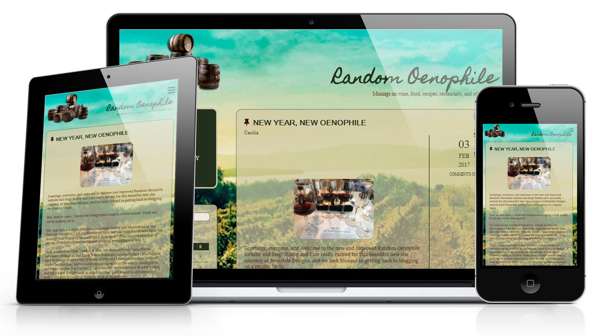

Case Studies
The Task
The client was looking to redesign her wine blog so she could move it from Blogger to a self-hosted Wordpress site, and wanted to have a custom theme.
My Process
I researched a number of award-winning wine blogs to see how they structured their websites. Many of them had a magazine or newspaper feel, and some had images of the blogger as part of their "look." After discussion with the client, we decided to go for a look that would resemble a country Italian café. We wanted it to have a comfortable, home-y feel, but still clearly indicate what the content focused on.
Image/Color Choices
The color choices came mainly from the image chosen for the background. A reddish-brown was used for the icons and main content, while a dark green was used for areas like headings. To keep the text from getting lost in the background image, a background in pale yellow (set at lower opacity) was used. This allowed the image to show through, but not compete with the content.
Typeface Choices
The typefaces were chosen based on their "feel." The title of the website was not only handwritten, but also had a gritty texture like chalk on a chalkboard. This was used also in the "chalkboard" menu. For the headings, I decided to use a contemporary, sans-serif font, with a hint of serif elegance in the contrasting thick and thin strokes. The main body of the text is a serif font.

The Task
Create a poster with positive imagery, using paths and shapes, filters, and adjustments.
My Process
There were few requirements, making the project wide open for interpretation. When I think of positive imagery, I think of the beach and vacation. For this reason, I decided to go for a vacation resort-type advertisement.
Image/Color Choices
The images chosen for this project were chosen to evoke happiness and a sense of relaxation. To simulate personal vacation photographs, I used a Polaroid shape and coloring. Shades of blue and green rounded out the background color, and the halftone filter gave the background image a nostalgic feeling.
Typeface Choices
For the typefaces, I decided to use a modern, sans-serif font for its clean and readable lines. The second was a script font which looked like it could be handwritten. I then applied a ripple effect to make it appear as though it was under water.